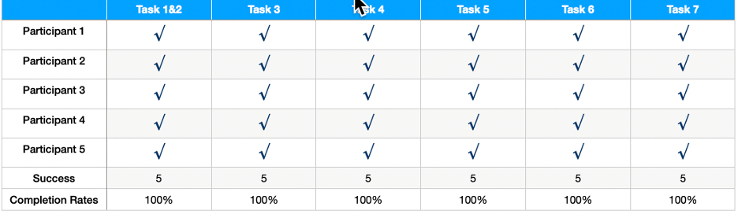
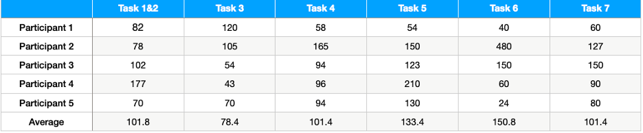
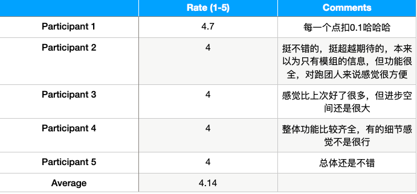
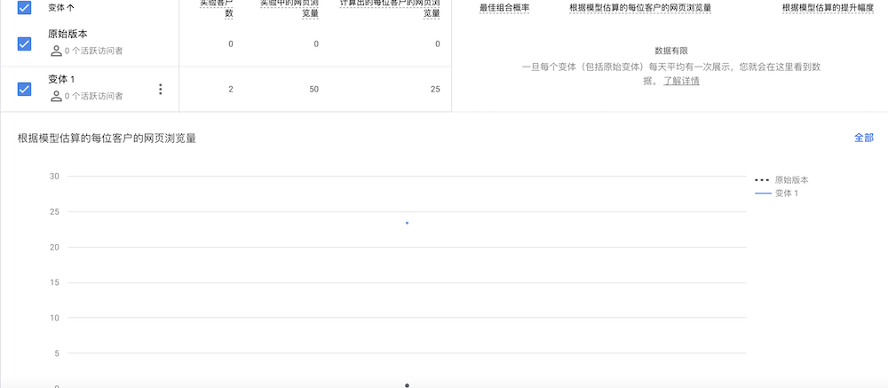

The proposed solution is to build a community platform to gather players (KP and PL) together, and at the same time to cooperate with the 魔都website (The most dominant domestic website focused on module submission) to invite the authors of the modules to the community, to sell the modules and at the same time to centralize all the information players need when playing to save the players' time to go back and forth between different websites and platforms to find information. This site is only for online players, so all activities and information are online. The key hypothesis I need to test is what will attract users to buy modules from the site or give bounties (打赏) to the author, and to get the audience to use my site regularly while having other partner sites.
The site deals with three main features - the three elements necessary to start a game. To verify that these three features meet user expectations, both usability test and A/B test will be conducted. Usability test allows me to see the most intuitive user experience with the site and get the most timely feedback, and A/B test gives me an overall view of users' willingness to enter the community or not.
When conducting usability test, I designed a small task for each page and gave the player the full experience of starting a game. Also, this time I put the registration page at the end because I wanted to see at what point the user would encounter the need to log in and let them feel whether this made sense.
Suppose you want to start a game in your free time -“首页”:
1. where you will click to get information
2. how you will get more details and what details you will get
3. buy a module- “模组”
4. Make a character card - “车卡”
5. Post a recruitment message - “跑团信息”
6. Check your own posting information and order information - “我的”
7. Register and login - “登陆-see when they need to login
I also designed post-test questions to let players give feedback on their overall experience and to allow them to make additional suggestions as they reminisce.
While doing A/B test, I took a suggestion from a user doing usability testing, I wanted to see if their registration information was required or not would affect their willingness to register. Although the site is profitable with authors and modules, the community is the foundation of the site (authors are also in the community and can communicate with users, which is the key to attracting users to buy modules and reward authors), so whether or not to register for the community is an important object to be tested, and this test was also conducted on the registration page.
My original site had a registration page that required an introduction and a complicated editing tool, but in the variant I set the option to "opt-in" and removed the editing tool to make the page look simpler.
After doing the userability test, I found that:
This time all the users completed all the tasks and thought the site was much better than last time.
This time many tasks can be really implemented, so the time spent overall more, where the time spent in the recruitment part is the most, on which users also encountered more problems.
This time they all think it is much better than the last time, the functions are also done more complete, and the pages are more reasonable, but there are still some small details need to be improved.
In the post-test interview, I asked users to recall the whole process of using the site (since I designed the feature following the logic of users planning a game, they could imagine the previous tasks in tandem as planning a game), and they gave some great suggestions.
登陆页
1. Jumping Strange After Registration - Let users go directly to their home page after registration.
2. Too much information to fill in the landing page - set only email and password on the landing page.
首页
1. The image is too large, and the text message is not obvious - change the font color and text size to make the text message stand out.
2. Blank character cards are downloaded once and not needed, and it feels unnecessary to put them on the front page to hide the really important information - change the character card information to a jump for the dice function.
模组
1. Style information and region information can be added to the cover information of the module.
2. No prioritization of filtering mechanisms - Design the ranking of filtering mechanisms.
跑团信息
1. The display page has no really important information - showing who the recruiter is and what they need right on the showcase page allows users to find their needs faster.
2. No sorting - set sorting (Recruiter, Recruiter PL, Recruiter KP)
3. The editorial page is too simple and the content posted is too varied - use a form to force users to fill in the necessary information, reduce the amount of spam recruitment information and standardize the format of recruitment information.
车卡
1. The approach to making character cards is a bit unclear- linking each step to a new page, explaining each step graphically, and allowing users to consult it in time if they don't understand it.
我的
1. Make some back buttons
Others
1. Module authors can be stationed on this site so that they can better attract audiences. Add the function of author's reward, so that most of the modules are free (more in line with the author's idea), and a few of the best products are made in paper version for sale.

As for the A/B test, I haven't gotten a sufficient sample size yet (only two clients right now) and will keep updating afterwards.